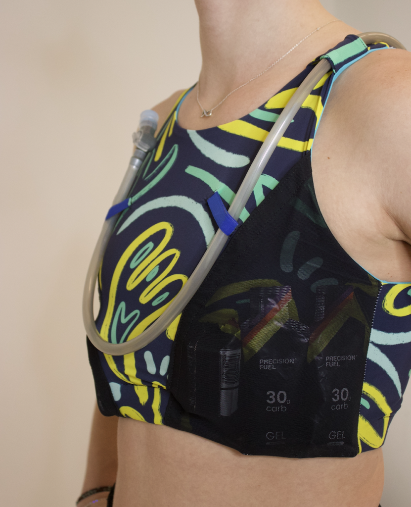
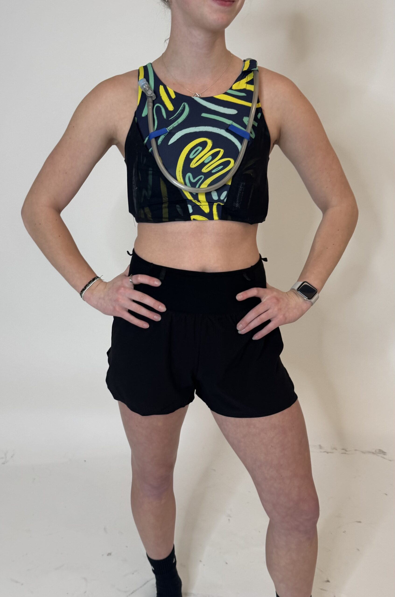
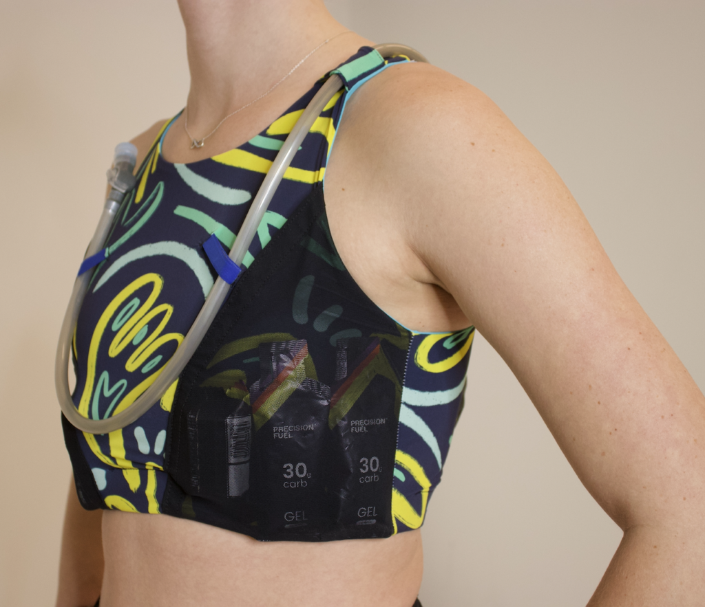
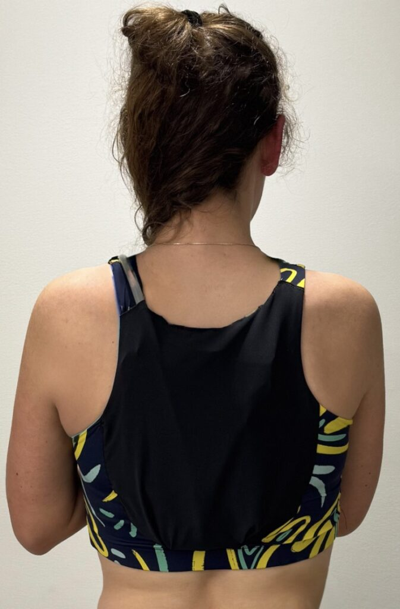

Run Carry / Hydration / Heat Management
Sports Bra Running Vest
A run-carry concept for women who refuse to choose between hydration, stable storage, and heat management on long efforts through rugged terrain.

The vest integrates large pockets for nutrition, phone, keys, and other small essentials while keeping the load close to the body.
The back pocket is compatible with a 1L hydration bladder, giving runners water capacity without adding a traditional vest layer over the torso.
The concept centers on efficient movement: carry what you need, reduce bounce, and keep heat management in the foreground.



Design Intent
Carry capacity without giving up airflow.
The project rethinks where run storage can live on the body, using a sports-bra silhouette to support hydration and essentials while keeping athletes cooler and more efficient over long trail efforts.